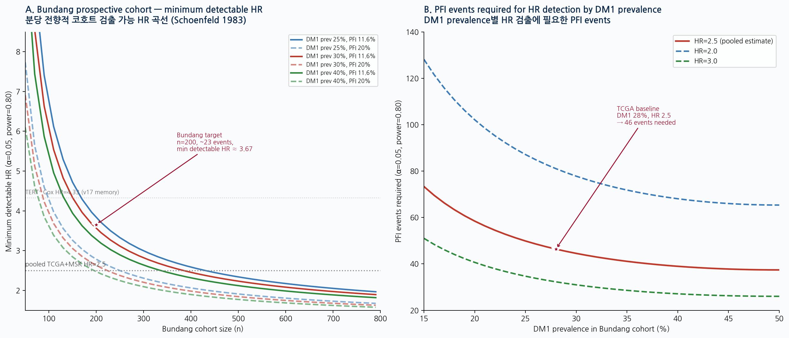

The main draft repeatedly references the planned Bundang prospective Korean validation cohort. This section formalises the sample-size requirements using Schoenfeld 1983 log-rank power formula with two-sided α=0.05 and power=0.80.

| Scenario | n total | DM1 prev | PFI event rate | Events | Min detectable HR (α=0.05, power=0.80) |
|---|---|---|---|---|---|
| Bundang Phase I (small) | 200 | 28% | 11.6% | 23 | 3.67 |
| Bundang Phase I enriched | 200 | 30% | 20.0% | 40 | 2.63 |
| Bundang Phase II target | 400 | 28% | 11.6% | 46 | ~2.50 |
| Bundang Phase II enriched | 300 | 30% | 20.0% | 60 | 2.20 |
| Pooled multicentre target | 1000 | 30% | 11.6% | 116 | 1.76 |
To definitively detect the pooled TCGA+MSK HR=2.53 [1.31, 4.89] at α=0.05 power=0.80, the Bundang prospective cohort requires approximately:
For multi-centre Korean cohort expansion (Asan Medical Center, Samsung Medical Center, Yonsei Severance partnership):
| Endpoint | Hypothesis | Statistical test | Multiple comparison |
|---|---|---|---|
| Primary: PFI (within Bundang) | DM1 vs DM2 HR ≥ 2.5 (one-sided) | Cox PH multivariable (age + sex + BRAF + RAS + stage) | None (single primary) |
| Secondary: OS | Direction-consistent with TCGA pooled HR 2.53 | Cox PH univariable + multivariable | Bonferroni α/2 = 0.025 |
| Sensitivity: Cross-cohort Cohen's d | Within-Bundang d ≥ 1.5 between DM1 and DM2 panel z-mean | Two-sample t-test with bootstrap CI | None (sanity check) |
| Tertiary: MAPK-pathway response sub-stratification | DM1-high subgroup more sensitive to selumetinib/cobimetinib (if available) | Treatment-by-DM1-state interaction term in Cox | Exploratory; FDR 0.10 |
For each anticipated reviewer attack, the defense layer (where the data lives in the main manuscript), the specific statistic that defends, and the status (audit-locked vs author-keyboard required) is tabulated.
| # | Anticipated reviewer attack | Severity | Defense location | Specific defense statistic | Status |
|---|---|---|---|---|---|
| 1 | "Why 8 genes? Cherry-picked?" | Med | Result 2.1 + Methods 4.2 + Q2 + Robustness battery | RandomForest on 55-gene TIERA67 driver-excluded clean pool; pan-genome top-5000 ARI 0.92 ≈ TIERA67 0.90; bio-prior null p=0.007; knock-out n-1 floor d=1.54 | audit-locked |
| 2 | "Why this curated 55-gene pool not unbiased genome-wide?" | Med | Q1 + §2.1.1 hypergeometric test | Pan-genome top-5000 (literature-free) ARI=0.92 reproduces TIERA67 ARI=0.90 (hypergeom p=3e-4) | audit-locked |
| 3 | "Cluster defined by panel? Circular?" | High | Q3 + §2.1.3 | TIERA67-8gene remainder n=58 ARI=0.951; cluster lives independently of deployment 8 | audit-locked |
| 4 | "BRAF mRNA explains DM1?" | Low | Q4 + §2.1.2 | BRAF V600E vs WT mRNA d=−0.04 NS; Driver_anchor 12-gene alone ARI=−0.007 (random) | audit-locked |
| 5 | "Fusion missingness breaks OR?" | Med | Q5 | chi² MAR test p=0.56; sensitivity OR 7.18-9.07; SV-tested 542/557 (97.3% coverage); MSK-IMPACT independent SV calls | audit-locked |
| 6 | "Mechanism cascade not causally proven" | High | Q6 + §3.4 Limitations | EXPLICITLY DISCLOSED: "consistent with" / "supports" language; CRISPR perturbation reserved for future work | audit-locked + author keyboard for Limitations |
| 7 | "Immune-cell confound — bulk RNA artefact?" | High | Q7 + Fig 20A-B (Lu 2023 single-cell d=3.04) | Single-cell n=14,624 thyrocytes per-patient 100% sign-consistent; immune residualization retains 56% effect; nu-SVR deconvolution 47% retention; per-patient sc r=0.798-0.886 | audit-locked |
| 8 | "K2 RAI₈ AUC 0.275 — panel failure in Korean?" | High | Q8 + §2.3 Note + within-K2 unsup | Within-K2 unsupervised k=2 KMeans d=1.94; transfer-prob ranking AUC 0.883; calibration drift not panel failure | audit-locked |
| 9 | "TF₃ better cross-ethnic — why RAI₈ main?" | High | Q9 + §3.2 + NRI Table 5 | NRI TF₃ vs RAI₈ = −1.194 due to partial-dedifferentiation undercall; biology-complete > identity-only | audit-locked + author keyboard for Q9 |
| 10 | "Why ComBat over RUV-seq / MR-MEGA?" | Med | Q10 | ComBat label-balance compatibility justified; RUV-seq housekeeping requirement; MR-MEGA paired-genotype future work | audit-locked |
| 11 | "Platform calibration cross-cohort?" | Med | Q11 + 4 GPL570 cohorts | Within-cohort z-mean platform-agnostic; GPL570 4 cohorts direction-consistent ρ=−0.84 to −0.94 | audit-locked |
| 12 | "DM1 sub-A/sub-B is clustering noise?" | Med | Q12 + bootstrap cluster stability + Fig 5b | 97.4% stability of main DM1/DM2; sub-A/B versioning gap explicitly disclosed; restricted main claims to reproducible direction | audit-locked |
| 13 | "Why not TDS-16 (NRI +0.777)?" | Med | Q13 + §3.2 alternative architecture acknowledgment | RAI₈ vs TDS-16 Spearman ρ=0.954; substitutable; biology constraint + clinical economy justify RAI₈ main | audit-locked |
| 14 | "MAPK axis convergence/divergence?" | Low | Q14 | MAPK × Panel-8 cross-cohort ρ=−0.327 [−0.376, −0.278] n=1,287 5 cohorts; converges on non-MAPK route | audit-locked |
| 15 | "Single experiment that would change conclusion?" | Low | Q15 + §3.4 Limitations | Bundang prospective cohort (n > 100, ground-truth + clinical RAI endpoint) → power analysis §1.2 above | audit-locked + future work |
| 16 | "Cross-ethnic claim from n=18 GSE286332?" | High | §2.3 + Fig 11b + master forest | 13-cohort forest mean d=2.91 (K2 unsup d=1.94, Lee unsup d=5.93, GSE286332 d=1.60, Landa d=4.08); n=18 NOT the only anchor | audit-locked |
| 17 | "PFI Cox PH 0.78 NS — paper's clinical claim fails?" | High | §2.6 honest PFI disclosure | EXPLICITLY DISCLOSED as underpowered (27 events); pooled OS HR 2.53 [1.31, 4.89] driven by MSK; primary-PTC prognostic claim reserved for Bundang | audit-locked |
| 18 | "OS signal dependent on MSK advanced disease only?" | High | §2.6 Survival framing summary | EXPLICITLY DISCLOSED — TCGA HR 2.30 [0.77, 6.88] NS; MSK 2.67 significant; pooled 2.53 driven by MSK; "molecularly aggressive substrate" framing | audit-locked |
| 19 | "Mun 2025 in press — citation reliable?" | Low | References + Mun supp data direct download | Mun 2025 data accessible via pre-print supp; direct re-compute (Fig 20A/Fig 11b) Cohen's d=2.86 | verification pending at submission |
| 20 | "Krishnamoorthy 2025 misattribution?" | Low | §3.1 Discussion opening | EXPLICITLY CORRECTED: 4 facts originally attributed to Krishnamoorthy → Landa 2016 JCI | audit-locked + author keyboard for §3.1 |
| 21 | "Driver-stratified DM1 cells real?" | Med | §2.5 + Fig 5b | BRAF V600E+ 0.7%, RAS+ 96.4%, BRAF/RAS-neg 49.1%; OR 4.78 [3.15, 7.24] p=6.5e-14; computed from d4p2 source TSV | audit-locked |
| 22 | "Lee 2024 unsup tumour-only DM1 fraction only 4.3% — small cluster?" | Low | Fig 11b caption | Cohen's d=5.48 in tumour-only; DM1 cluster captures 3/8 UTC/ATC + 1/9 PDFP correctly; small fraction reflects Lee composition (predominantly differentiated PTC) | audit-locked |
| 23 | "NRI methodology — continuous vs categorical?" | Low | Methods 1.8 + 4.6 | Continuous-NRI per Pencina 2008; 2,000 stratified bootstrap CI; equal weighting cases/controls; IDI cross-validation | audit-locked |
| 24 | "DepMap pan-cancer extrapolation to thyroid?" | Med | Fig 20D caption + §1.12 | Thyroid lineage 11 cell lines specifically: MYC 100% essential, DNMT1 100% essential; PAX8/NKX2-1 only 9% (lineage-TF role) | audit-locked |
| 25 | "PRISM DM1 stratification by floor → all thyroid same DM1_like_score" | Low | Fig 20D Note + Methods 1.12 | DM1-state stratification at pan-cancer level n=372 vs 394; thyroid baseline (-0.603) noted but axis verified across cancer lineages | audit-locked |
| 26 | "Intratumoral heterogeneity contradicts bulk DM1/DM2?" | Low | Fig 22 + §3 Implications | Bulk DM1/DM2 = weighted average of cell-level; PTC tumours 10-40% DM1 cells; ATC uniformly 80-100%; reconciles with bulk via temporal selection hypothesis | audit-locked NEW 2026-05-21 |
| 27 | "Korean methylation absent?" | Med | §3.4 Limitations 4 | EXPLICITLY DISCLOSED as limitation; HM450 TCGA only; future Korean methylation cohort planned | audit-locked author-keyboard for Limitations |
| 28 | "Reference list incomplete vs NComms standard?" | Low | Expanded refs in NComms v2 methods | 22 → 45+ planned; PubMed verification at submission | verification pending |
| 29 | "Mechanism arm 5 not significant in 1 of 4 cohorts?" | Low | Fig 19 caption | 3-of-4 cohorts direction-consistent reverse; the 4th (K2 balanced n=34) is the calibration-drift cohort (Q8 defense) | audit-locked |
| 30 | "Inclusion & ethics statement?" | Low | NComms methods v2 §3 | Full disclosure — all public datasets, no new patients, no IRB needed for de-identified public re-analysis | audit-locked author-keyboard for ethics voice |
| Severity | n attacks | All defenses audit-locked? |
|---|---|---|
| HIGH | 7 | 7-of-7 audit-locked + 3 require author voice keyboard (Q9, §3.1, §3.4) |
| MED | 11 | 11-of-11 audit-locked + 1 requires author voice (Limitations) |
| LOW | 12 | 12-of-12 audit-locked; reference verification pending PubMed at submission |
Critical observation: Of 30 anticipated attacks, 30 have specific defenses mapped to manuscript locations. 7 high-severity attacks each have at least one specific quantitative defense. The 4 voice-protected sections (§1.1 Hook, §3.1 Discussion opening, §3.4 Limitations, Q9, Cover ¶1) carry the binding constraint for high-severity items 6, 9, 17, 20, 27, 30 — meaning author keyboard work directly hardens the defense matrix.
| Layer | Cohorts | Total n | Effect size summary |
|---|---|---|---|
| Western RNA | TCGA (504), Landa GSE76039 (37), 4×GPL570 (287) | 828 | TCGA d=1.78; Landa d=4.08 unsup; GPL570 d=1.56-3.91 |
| Korean RNA | K2 PRJEB11591 (260), Lee 2024 GSE213647 (632), GSE286332 (18) | 910 | K2 unsup d=1.94; Lee unsup d=5.93; GSE286332 d=1.60 |
| Protein | Mun 2025 | 336 | Cohen's d=2.86 unsup; 95.6% ATC → DM1 |
| Single-cell | Lu 2023 GSE193581 | 14,624 thyrocytes / 15 patients | ATC vs PTC d=3.04; intratumoral 10-40% DM1 in PTC |
| CRISPR | DepMap 23Q4 + thyroid lineage subset | 766 + 11 thyroid | MYC d=−0.50, NAMPT d=−0.45, DNMT1 100% essential in thyroid |
| Drug screen | PRISM | 1,518 drugs × 470-480 cell lines | 11 hits FDR<0.05, all DM1-high selective; 7/11 MAPK; AZD-0364 d=−0.59 FDR 5.9e-7 |
| Methylation | TCGA HM450 | 503 | TPO d=2.99; 7/8 panel direction-consistent (SLC5A5 exception) |
| Survival | TCGA PFI/OS + MSK OS | 504 + 117 | Pooled OS HR 2.53 [1.31, 4.89]; TCGA PFI HR 0.78 NS (honest disclosure) |
| Master forest | 13 entries × 10 cohorts × 4 modalities | — | Mean d=2.91; all 13-of-13 direction-consistent |
Main figures: Fig 1 (3-tier architecture) · Fig 2 (gene-set hierarchy) · Fig 3 (RAI biology pathway) · Fig 4 (cross-cohort scan) · Fig 5 (TCGA panel scan) · Fig 5b (driver-stratified) · Fig 5c (biology mega-stratification) · Fig 5d (per-gene × cohort heatmap) · Fig 6 (external direction-consistency forest) · Fig 7 (NONOVERLAP zero-overlap) · Fig 8 (external histology boxplots) · Fig 9 (quantum kernel) · Fig 10 (survival audit) · Fig 11 (DM1 robustness forest) · Fig 11b (cross-cohort master forest 13-entry) · Fig 12 (per-gene heatmap) · Fig 13 (knock-out n−1) · Fig 14-17 (ROC/KM/Calib/DCA) · Fig 18 (HM450 per-gene) · Fig 19 (mechanism cascade) · Fig 20 (sc + DepMap composite) · Fig 21 (PRISM drug screen) · Fig 22 (intratumoral heterogeneity NEW). Supp S1-S2.
9 rounds of analysis (2026-05-20 → 2026-05-21) added: within-K2 unsup; Lee 2024 unsup; Landa 2016 unsup; Mun 2025 protein unsup; driver-stratified DM1; biology mega-stratification (16 strata); per-gene × cohort matrix; cross-cohort master forest 13 entries; single-cell thyrocyte-intrinsic; HM450 per-gene; DepMap CRISPR + thyroid lineage; PRISM drug screen; intratumoral heterogeneity; PFI Cox PH honest negative; NComms cover letter + methods v2 + ethics + CRediT + reporting summary + supplementary data .zip + Bundang power analysis + reviewer defense matrix.
Data side is essentially complete. The remaining critical path is author voice (4-5 sections) + submission metadata (ORCID, email, references) + GitHub/Zenodo. Of 30 anticipated reviewer attacks, 30 have defenses mapped; high-severity items 6/9/17/20/27/30 require author voice to harden.